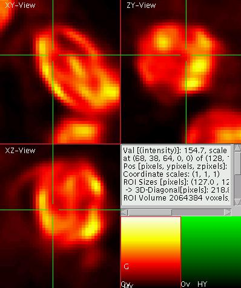
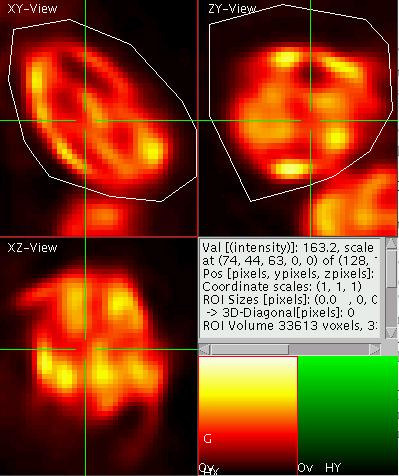
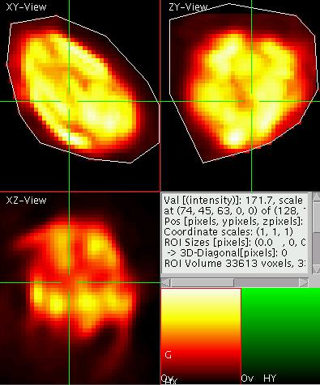
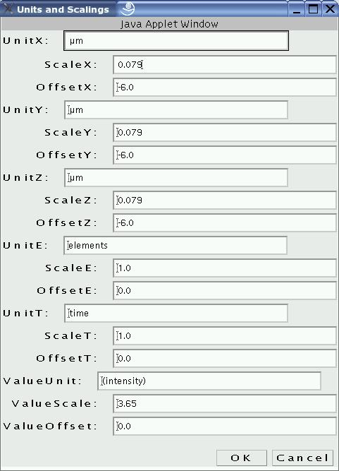
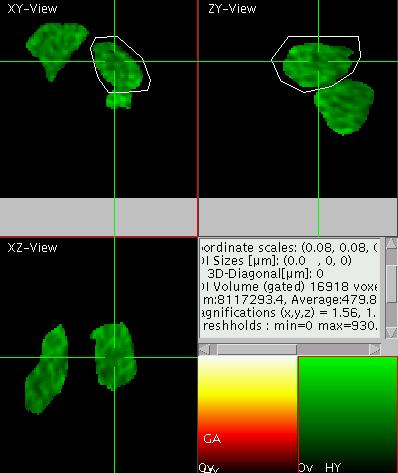
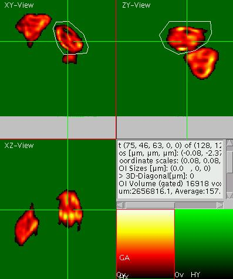
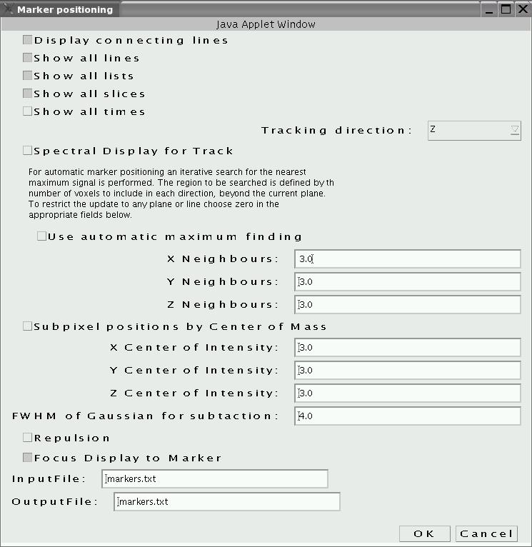
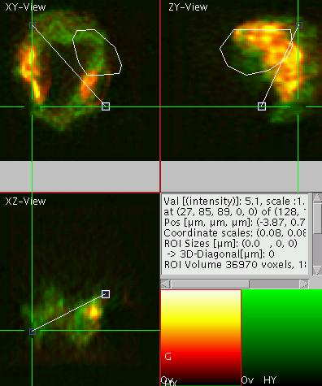

View5D - Three-dimensional Quantification Tutorial
Image Data is an axial tomographic confocal reconstruction (Rainer
Heintzmann) of a moss spore (Polytrichum
Cummune).
please wait for the viewer and the image data to be loaded (THIS
MIGHT TAKE SOME TIME, the dataset has ~4 MB)! The tutorial continues
down below the applet.
The 3D display
To the left you see a dual color display of a moss spore. For
three-dimensional data such as confocal volume datasets, the viewer
automatically switches to displaying three orthogonal slices which all
intersect at a common point which is indicated by the green cross-hair
in
each of the three views. In other words, the horizontal line in the top
left panel (denoted XY view or termed "transversal" in the medical
world) indicates the position of the slice shown in the panel below
(termed XZ-view or "frontal"). Similarly the vertical line in the top
left panel indicates the "sagittal" slicing position shown in the top
right window. In the same way the position of the "transversal", XY
slice is indicated by a green line in each of the other two views.
Change the slicing position by dragging the cross -hair in one of the
views (e.g. the XZ-view). Observe how the other two views update.
To toggle between this "orthogonal slice" display mode and the "line
plot mode" as given in the previous tutorial press "q" in the
appropriate view.
Zoom into the data by typing "A" (use "a" for demagnify). Observe, how
the other two views behave, when you zoom in. If you want to initialize
the zooming simply press "i". To move the image around in the zoomed
mode drag it by pressing the middle mouse button (or press the
space-bar before dragging with the left mouse button).
Lets zoom into one of the chloroplasts and switch to the single color
mode (via "C") and toggle to the red emission channel (via "e"). The
result should look like shown on the right.
Three-D ROIs
The aim is now to select a
three dimensional region of interest (ROI) of user defined shape. To do
so first toggle to the poly-ROI mode by pressing "S" ("shift-s"). Now
start a poly-line ROI by a shift-click with the left mouse button. Add
further corners to the ROI by clicking and close the ROI by a
double-click. Now select a ROI enclosing the chloroplast of interest in
the XY-view as well as in the YZ-view. The result should look like
shown on the left.
This procedure defined a ROI in three dimensions as the intersection
volume of the ROIs as given in the orthogonal views. You can now look
at the projections (e.g. "p" or "P") as defined by the ROI. The result
is shown on the right. One has to take care to make the ROIs big enough
such that everything in the other ROIs that needs to be included is
included. Try to use the XZ-view for generating a ROI and observe the
effect of "missing parts" on the other projections when you put the
ROI too close to the boundary.
Image Quantification
In the text window (middle right panel) some information about the
image is displayed. For investigating images in detail the value of the
voxel of the active element right in the middle of the cross-hair is
displayed in the top row of the text display. This is especially useful
if one of the multicolor images displays labeling object information
(usually with the random color map). By positioning the cross-hair over
the object its identification can then be seen. Note that the
displayed value does not necessary correspond to the value in the raw
data, since it is possible to provide an independent intensity scaling
factor and offset for each element (as it is the case for the data set
displayed above). These scaling factors are also displayed in the top
row.
The
second row displays the integer coordinates of the voxel in the
middle of the cross-hair and the size of the data set. Note that the
voxel coordinates start with zero (top left corner) along all
dimensions. In the third row the coordinates are given again, but this
time in meaningful units. The scaling and the units (as displayed in
the next row) can either be supplied at startup (have a look at the
source of this web page or click here
to see the list of tags for the applet version; using ImageJ this
information is read from ImageJ if provided), or it can be set by the
user via the unit menu accessible by pressing "N" ("shift-n") on the
keyboard.
Sum and mean intensity of ROIs
The information below concerning the sizes of a ROI is currently only
available in the rectangular ROI mode (accessible via "S"). However the
volume of the ROI in voxels and real world units is given for any type
of ROI as are the information below on the sum and average intensity
(real world units) inside the ROI. As expected the choice of color
adjustment parameters (like brightness and contrast "1" to "8") has no
influence on the sum.
Using the Gate Element for Thresholding
Sometimes it is useful to perform the quantification only in a region
above a certain threshold (e.g. to determine the mean intensity inside
an object, which can not be perfectly selected by ROIs). Then the use
of the gate element is recommended.
Turn on the "overflow /
underflow"
display by typing "o" and set the
lower threshold such that the chloroplasts are segmented as shown on
the right (here the viewer is in the maximum projection mode "p" for
XY). Note that up to this the quantification of the ROI sum or ROI
average has not changed. Now activate the gate element by pressing "U"
and note the change in these values (see results in the text display on
the right). Note also that the first element is marked by a "G" in the
element display as the gate element. When the gate is active, it is
marked "GA". Move to display a different color
channel (element) by pressing "e" and observe that now only the part of
the green channel is displayed that is above the gate in the red
channel. The result should look like shown on the left. With "u" the
active element is defined as the gate element and the previous gate
element is not used any more.
This mode of display is also very useful for the display of images
displaying pixel by pixel computed values such as ratio images,
fluorescence lifetime images, FRET images and alike. For these images
the values are usually only meaningful in positions where the
associated intensity images are above the noise threshold. Even though
a quantification of the mean values of these quotient images would be
possible, the user is advised to rather compute the mean or sum in the
individual images prior to division and then evaluate the quotient from
these values. The reason is that the noise propagation leads to biased
results when computing averages or sums in the quotient images.
Using markers to measure distances
Set the thresholds
back to normal
level (via "1"-"8") and deactivate the gate ("U") and put the viewer
back into multicolor display mode ("C"). The task is now to measure a
distance in 3D. To do so, first activate the marker menu ("n"),
activate "display all slices" and deactivate "use automatic maximum
finding" and "sub pixel position by center of mass" (as shown on the
right). Close by clicking "OK" (expand the size of the window if
necessary to see "OK"). Set a marker in 3D by setting the cross-hair to
a position and pressing "m". Go to a different position with the
cross-hair and press "m" again. The display should look like shown on
the left for measuring the spore's diagonal diameter. The text display
now displays the 3D length of the diagonal and its 2D XY projection
length. You can move the marker to a different position by dragging it
with the left mouse button. In this way it is also possible to set them
to sub pixel coordinate positions. To delete a marker press "M". Only
the distance between two successive markers is displayed in the text
window. If many markers are there, you can toggle the active marker by
pressing "9" and "0".
Counting using Markers
Markers are also very useful for counting objects by hand. E.g. if the
number of FISH (Fluorescence In Situ Hybridization) spots in a number
of cell nuclei shall be determined the user marks each spot in one cell
with a marker in 3D. For the each new cell a new marker list can be
opened ("k"). All marker position can finally be summarized and copied
to a spreadsheet for further evaluation by pressing "m" in the element
display (at the lower right). For further details see the tracking tutorial or the command reference.